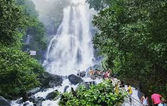
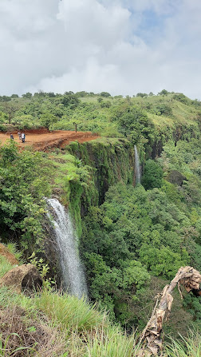
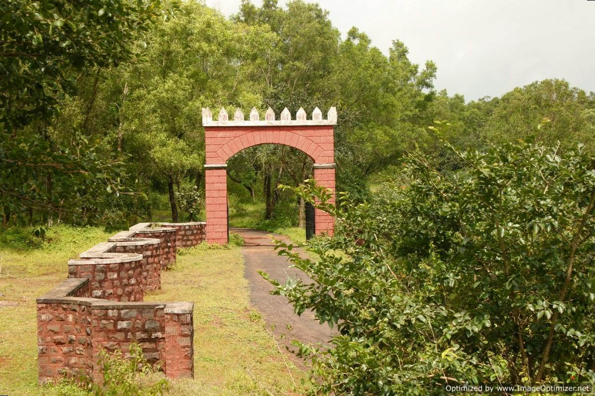

Ammboli WaterFall: A Hidden Gem in Sahyadri
Amboli Waterfall, nestled in the Sahyadri Hills, is a monsoon marvel. It offering a dramatic and beautiful spectacle.Amboli is part of the Western Ghats,a UNESCO World Heritage Site known for its biodiversity..Visitors can witness a variety of plant species, butterflies, and rare birds.
Best Time to Visit:
Monsoon Season: The best time to visit Amboli Waterfall is during the monsoon season, from June to October. During this period, the waterfall is at its full glory, with the water flow at its peak and the surrounding landscape lush and green.Location:
Amboli Waterfall is situated near the town of Amboli in the Sindhudurg district of Maharashtra. It is approximately 690 meters above sea level, making it a cool retreat during the hot summer months. Swapnvel:A Hidden Paradice in Chandgad
During the monsoon, the valley blooms with vibrant flowers, offering a breathtaking sight for visitors.Swapnvel is surrounded by lush green forests and hills, making it a perfect escape into nature. The area is especially picturesque during the monsoon season when the entire landscape is covered in vibrant greenery. The monsoon brings numerous small waterfalls and streams to life in Swapnvel. These natural water features add to the charm and provide a serene environment.
Best Time to Visit:
Monsoon Season: The best time to visit Swapnvel is during the monsoon season, from June to October. During this period, the area is at its most beautiful, with lush greenery and flowing waterfalls.Location:
Swapnvel is located in the Chandgad region of Maharashtra. It is relatively remote, adding to its charm and making it an ideal spot for those looking to escape the crowds. Tilari: A Pristine Natural Retreat in Chandgad
The Tilari Dam, constructed on the Tilari River, is a major attraction. The area around the waterfalls offers excellent trekking opportunities. Trails through the forests lead to breathtaking viewpoints and the waterfalls themselves.The reservoir created by the dam is surrounded by lush hills and dense forests, offering a picturesque landscape.The dam on the Tilari River is a perfect spot for picnics and nature walks, especially during the monsoon when the surroundings are lush and vibrant. Tilari Lake: The lake is an ideal place for boating and relaxation, offering a tranquil environment amidst verdant landscapes.
Activities:
Best Time to visit:
The monsoon season is the best time to visit Tilari. During this period, the region's natural beauty is at its peak, with lush greenery, full-flowing waterfalls, and mist-covered hills. The weather is cool and refreshing, making it ideal for outdoor activities like trekking, nature walks, and bird watching.Location:
Tilari is located in the Chandgad taluka of Maharashtra, near the border with Karnataka. It is part of the Western Ghats, a mountain range known for its rich biodiversity and stunning landscapes.
Samangad fort: A Historical Gem in Chandgad
The fort has a long history, with its origins dating back several centuries. It has seen the rule of various dynasties, including the Marathas and the British. Samangad Fort was strategically important due to its location atop a hill, providing a vantage point to monitor the surrounding region and defend against invasions.
Best Time to Visit:
Monsoon Season (June to October): The monsoon season is the best time to visit Samangad Fort. The rain brings the surrounding landscape to life, with lush greenery and flowing streams, enhancing the fort's beauty.Location:
Samangad Fort is located in the Chandgad taluka of Maharashtra. It is situated atop a hill, making it a prominent landmark in the region. Nearest Major City: Belgaum, Karnataka, is the nearest major city, approximately 70 km away from the fort. Pargad Fort: Lush Greenery and Serene Atmosphere
Pargad Fort, situated a top the Sahyadri Range, is a historic site that offers panoramic views of the surrounding valleys and hills.Pargad Fort is a significant historical fort located in the Chandgad taluka of Maharashtra. Nestled in the Sahyadri mountain range, this fort is known for its rich history, strategic importance, and stunning natural surroundings. Pargad Fort holds a prominent place in Maratha history. It was one of the key forts during the reign of Chhatrapati Shivaji Maharaj, who used it for defense and strategic purposes. Inside the fort, visitors can find remnants of old buildings, water reservoirs, and temples. The fort is an excellent destination for trekking and exploring Maharashtra's rich history.
Best Time to Visit:
Monsoon Season (June to October): The best time to visit Pargad Fort is during the monsoon season. The rain brings the surrounding landscape to life, with lush greenery and flowing streams, enhancing the fort's beauty.location:
Pargad Fort is located in the Chandgad taluka of Maharashtra, India. It is situated near the border with Karnataka, approximately 60 kilometers from the city of Belgaum.
About Me
Hello!! Welcome to my corner of the internet! I'm Pranjal Togalekar, an avid explorer and nature enthusiast with a deep love for the monsoons. My heart belongs to Chandgad, a hidden gem in Maharashtra that transforms into a lush paradise with the onset of the rains. Join me as I uncover the enchanting beauty, vibrant culture, and captivating stories of Chandgad during the monsoon season. From misty hills to roaring waterfalls, let's embark on a journey through nature's green symphony together!
Contact Me
Email: pranjaltogalekar@gmail.com
Connect with me on social media: